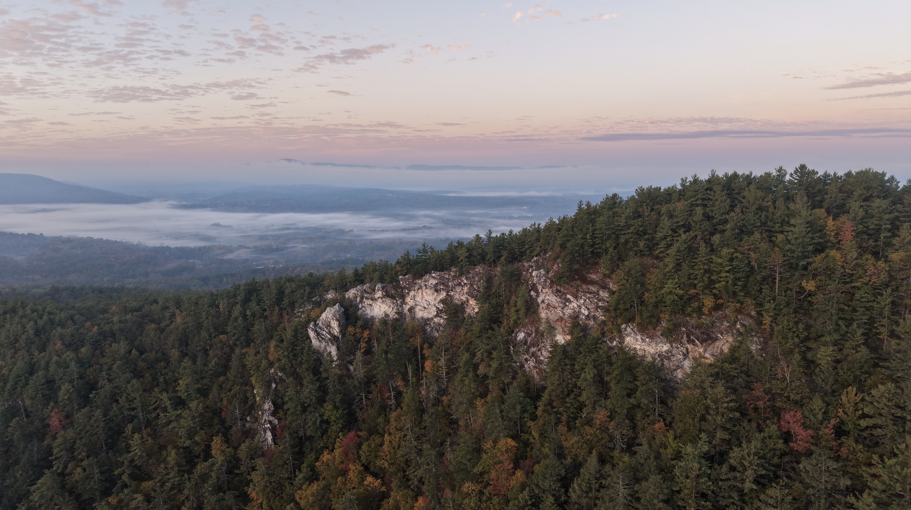
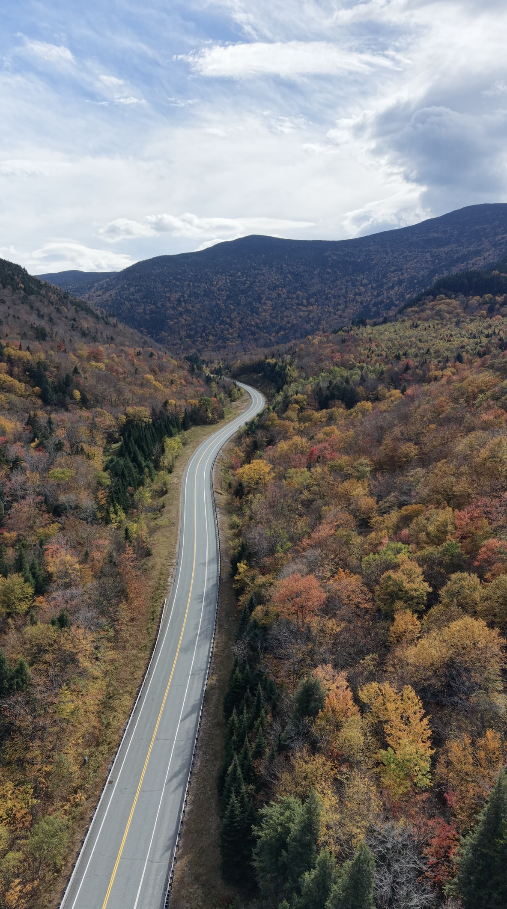
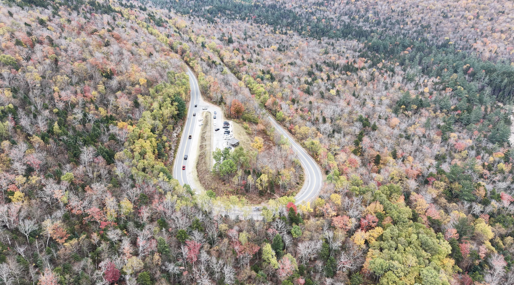
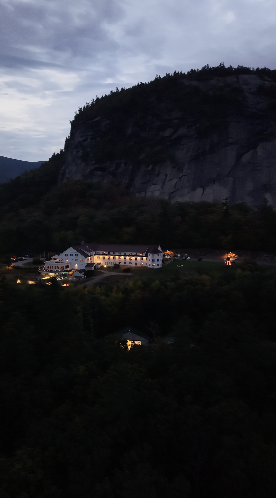
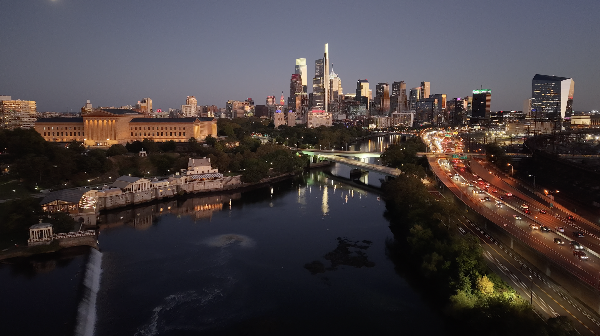
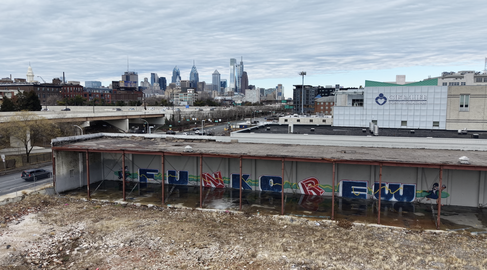
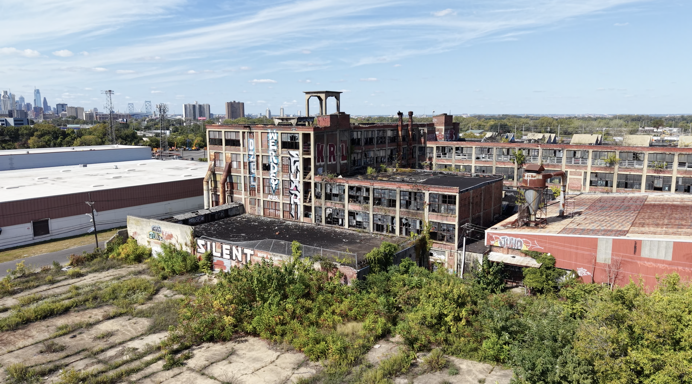

Personal drone photography
Every image here was captured purely out of personal passion.
None were commissioned, sold, or created for commercial work.
Benjamin Franklin Bridge

Mountain ridge

Autumn road

Hairpin turn

Groton Long Point, Connecticut

Philadelphia skyline

Graffiti, Philadelphia

Graffiti, Camden